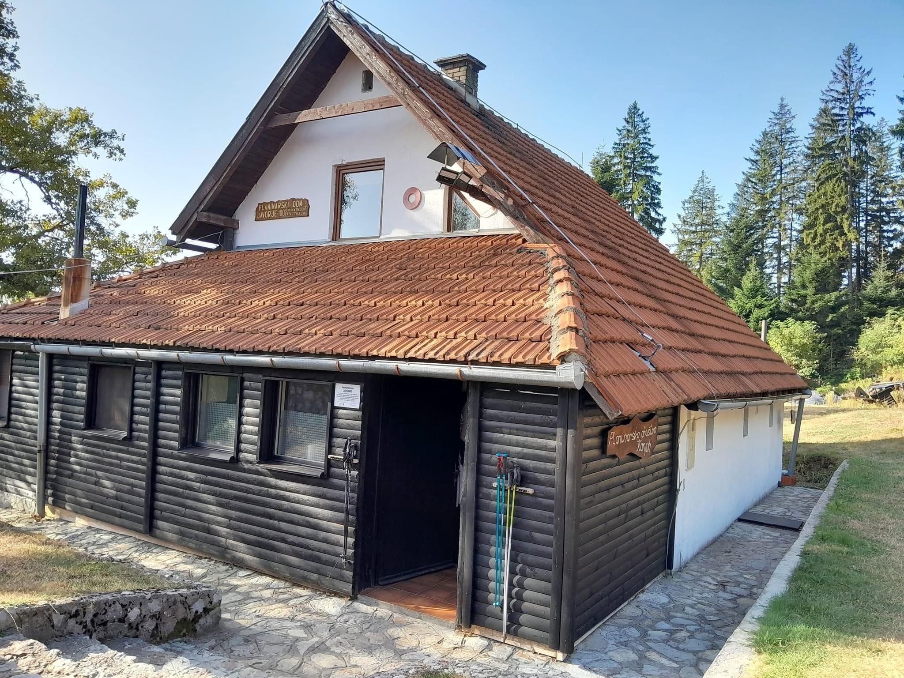

Javorje i Vršani
Dva doma za predah i prenoćište.
Dom u prirodi, korak od grada
Planinarsko društvo „Konjuh“ Tuzla brine o dva doma, planinarskom domu Javorje i planinarskom domu „Djed Stjepan“ na Vršanima. Oba su okružena šumom i planinskim predjelima, pogodna za šetnju, odmor i planinarske aktivnosti, i služe za druženje i okupljanje planinara i izletnika.
Javorje je pogodno za duže boravke i istraživanje Konjuha, dok su Vršani idealni za kraće izlete i rekreaciju u prirodi. Kroz ove objekte i brojne aktivnosti društvo doprinosi razvoju i promociji planinarstva na području Tuzle i Konjuha.
Javorje
Planinarski dom Javorje smješten je na istočnim obroncima planine Konjuh, na nadmorskoj visini od 1.002 metra. Ime je dobio po planinskom grebenu Javorje, koji se nalazi neposredno iznad doma, a čiji je najviši vrh Bandera, visok 1.207 metara. Dom je idealno mjesto za odmor, boravak u prirodi i polazna tačka za istraživanje planine Konjuh. Gostima su na raspolaganju kuhinja, hrana i piće, kao i smještajni kapacitet od ukupno 38 ležaja. Smještaj obuhvata četiri sobe sa po četiri ležaja i jednu skupnu sobu sa 22 ležaja. U domu je obezbijeđena i voda. Do Planinarskog doma Javorje iz sela Stupari vodi nekoliko obilježenih planinarskih staza. Uspon traje između dva i četiri sata, u zavisnosti od odabrane staze i tempa kretanja.Planinarski dom Javorje pruža idealnu priliku da se zastane, odmori i uživa u miru planine, čistom zraku i prirodnom okruženju Konjuha.
Vršani
Planinski Dom Vršani, smješten u slikovitom selu Vršani, je šarmantna turistička atrakcija koja posjetiocima nudi miran bijeg u prirodu. Ovo prelijepo mjesto savršeno je za one koji uživaju u aktivnostima na otvorenom i zadivljujućim pejzažima. Sa svojom gostoljubivom atmosferom, Planinski Dom Vršani pruža idealan ambijent za opuštanje i istraživanje. Gosti mogu uživati u uslugama ručavanja, što im omogućava da se upuste u ukusnu lokalnu kuhinju dok uživaju u prelijepom okruženju. Bilo da tražite mirno utočište ili avanturistički dan, Planinski Dom Vršani je odlična destinacija koja prikazuje ljepotu ovog kraja.